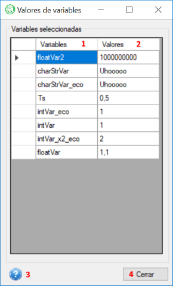

Ayuda para la ventana Valores de variables
A continuación se explicarán los apartados que componen la ventana "Valores de vaiables" de la aplicación Interfaz para Planta Piloto.
Ventana "Valores de variables"

- Columna con las variables seleccionadas.
- Columna con los valores actualizados de cada variable seleccionada. Estos valores se actualizarán cada 5 segundos.
- Botón de acceso a la ayuda
- Botón para cerrar la ventana.